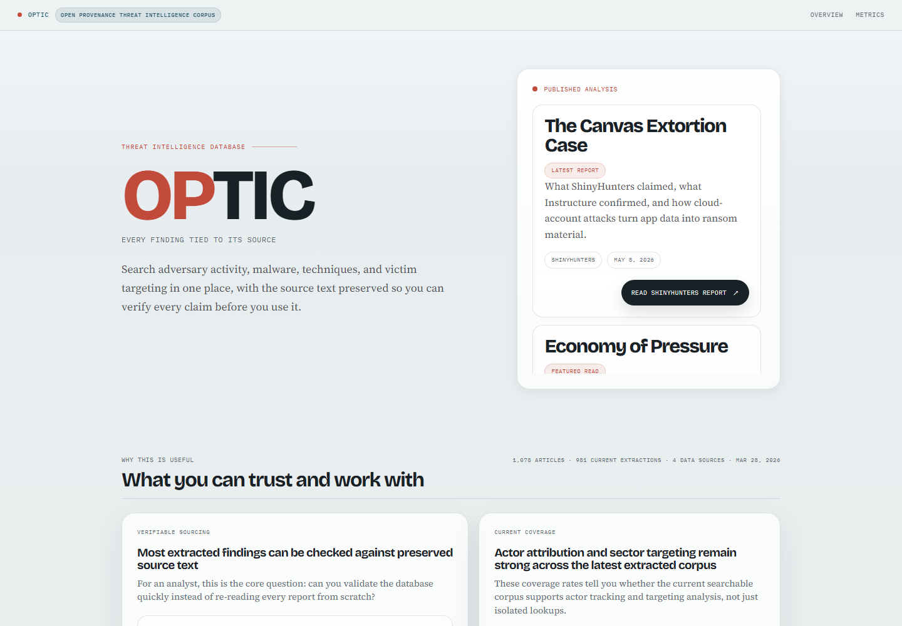
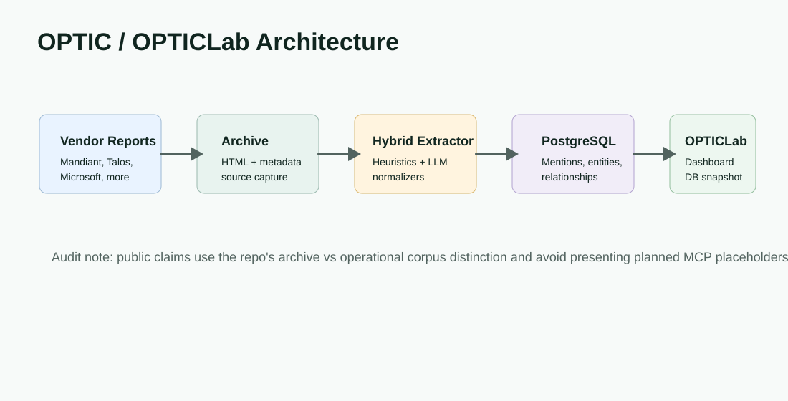
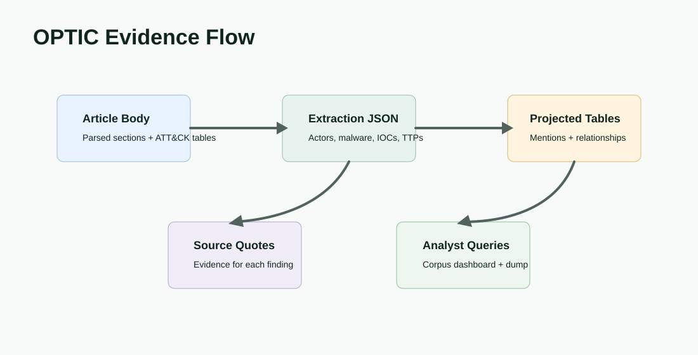

Product Surface


Problem
Threat reports contain useful actor, malware, infrastructure, technique, and relationship data, but analysts often have to read long narrative reports manually and reconstruct structure themselves. OPTIC makes the extracted structure queryable while preserving links back to source text.
Solution
The pipeline ingests reporting from sources such as Mandiant, Google security resources, Cisco Talos, CrowdStrike, Microsoft, Sophos, and Unit42. It combines deterministic extraction, LLM-assisted inference, vendor-specific normalization, and PostgreSQL models for articles, extraction JSON, entities, aliases, mentions, relationships, and technique facts.
Data Flow

Design Decisions
Source Traceability
Source quotes and extraction JSON are retained so structured records can be challenged and traced.
Archive Versus Corpus
Public copy separates the broader archive from the analyst-usable operational corpus to avoid inflated claims.
Hybrid Extraction
Heuristics handle repeatable patterns while model-assisted inference helps with ambiguous narrative context.
Snapshot Release
The public dashboard and downloadable database snapshot make the corpus inspectable outside the local dev environment.
Verified Corpus Signals
The dashboard documentation distinguishes 571 normalized archive articles from 402 analyst-usable operational corpus reports. It also documents 18,319 mentions, 18,220 source-quoted mentions, 7,243 searchable IOCs, and 1,113 relationships for the current operational projection.